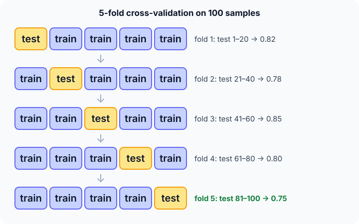

Prerequisites
- Overfitting and why test data must be unseen.
- Mean and standard deviation.
- A metric to score each fold.
The analogy
Everyday analogy
Think of a teacher with 5 sets of exam questions. Instead of one exam, they let you study 4 sets and test you on the fifth, then rotate, five times. Your average mark says much more than one lucky (or unlucky) exam.
Cross-validation does the same for a model: every block of data gets its turn as the unseen exam.
How it works
Rule: each fold's test block must be completely unseen during that fold's training, including any preprocessing fitted on the data.
Start with a 5-fold split on 100 samples
Samples are numbered 1–100 (shuffled beforehand). Fold $f$ tests on block $f$ and trains on the other four. Predict, then open "Check".
Example: predict before you read
Step 1. How many samples are in each test block, and in each training set?
Check
20 test, 80 training, in every fold.
Step 2. Cover the next line and guess: which samples are the test block of fold 3?
Check
Samples 41–60.
Step 3. The fold scores are 0.82, 0.78, 0.85, 0.80, 0.75. Predict the mean and roughly the spread.
Check
Mean 0.80; standard deviation about 0.034. Report "0.80 ± 0.03".

Quick recall: Before reading further, cover the text above and say out loud: how many times is each sample used for testing in $k$-fold cross-validation?
Check your answer
Exactly once.
Finish the picture: choosing with CV
Two settings of a model give these 5-fold mean scores: setting A 0.80 ± 0.03, setting B 0.81 ± 0.08.
- Is B clearly better? Predict.
Check
No. The difference (0.01) is far smaller than B's spread (0.08); the two are statistically hard to tell apart, and A is more stable.
- After choosing, what do you train? Predict.
Check
One final model on all 100 samples with the chosen setting. CV was only for choosing; a separate untouched test set gives the final honest score.
Quick recall: Without scrolling up, say out loud: why use stratified folds for a dataset with 5% positives?
Check your answer
A random block might contain almost no positives; stratifying keeps about 5% positives in every fold, so every score is meaningful.
Full worked calculation
The page's 5-fold cross-validation on $n = 100$ shuffled samples, with fold scores 0.82, 0.78, 0.85, 0.80, 0.75. We compute the fold boundaries with the code's formula, the mean and spread, and then use them to compare two settings.
| Fold | Test indices | Training indices | Score $s_f$ | $s_f - \bar s$ | $(s_f - \bar s)^2$ |
|---|---|---|---|---|---|
| 1 | 0–19 | 20–99 | 0.82 | +0.02 | 0.0004 |
| 2 | 20–39 | 0–19, 40–99 | 0.78 | −0.02 | 0.0004 |
| 3 | 40–59 | 0–39, 60–99 | 0.85 | +0.05 | 0.0025 |
| 4 | 60–79 | 0–59, 80–99 | 0.80 | 0 | 0 |
| 5 | 80–99 | 0–79 | 0.75 | −0.05 | 0.0025 |
| Sum | 4.00 | 0 | 0.0058 |
-
1Fold boundaries
$$\text{start} = \left\lfloor \frac{f \cdot n}{k} \right\rfloor, \quad \text{end} = \left\lfloor \frac{(f + 1)\, n}{k} \right\rfloor \;\Rightarrow\; f = 2:\; \left[\tfrac{200}{5}, \tfrac{300}{5}\right) = [40, 60)$$With 0-based indices, fold 3 ($f = 2$ in code) tests on indices 40–59, which are samples 41–60. The other 80 samples train the model for that fold.
-
2When n does not divide evenly
$$n = 10,\; k = 3: \quad [0, 3),\; [3, 6),\; [6, 10) \quad \text{sizes } 3, 3, 4$$Integer division spreads the leftover sample so block sizes differ by at most 1. Every sample still lands in exactly one test block.
-
3Mean score
$$\bar s = \frac{0.82 + 0.78 + 0.85 + 0.80 + 0.75}{5} = \frac{4.00}{5} = 0.80$$Each of the 100 samples was scored exactly once by a model that never saw it, so 0.80 uses all the data for testing without cheating.
-
4Spread across folds
$$\text{sd} = \sqrt{\frac{0.0058}{5}} = \sqrt{0.00116} \approx 0.034$$Squared deviations from the table, averaged, then square-rooted. Dividing by $k - 1 = 4$ instead gives 0.038; either way, report "0.80 ± 0.03".
-
5What one split would have told you
$$\text{single 80/20 split: anywhere from } 0.75 \text{ to } 0.85$$A plain hold-out set is just one of these folds. Depending on luck, you would have reported 0.75 or 0.85: a gap of 0.10 that has nothing to do with the model.
-
6Compare two settings
$$A: 0.80 \pm 0.03, \quad B: 0.81 \pm 0.08 \;\Rightarrow\; 0.81 - 0.80 = 0.01 \ll 0.08$$The difference is eight times smaller than B's fold-to-fold noise. Prefer A: the same score, and far more stable.
-
7The cost
$$k = 5: \; 5 \text{ trainings on } 80 \text{ samples}, \qquad k = 100 \text{ (leave-one-out)}: \; 100 \text{ trainings on } 99$$More folds mean bigger training sets (less pessimistic scores) but more compute. 5 or 10 is the usual compromise.
What the numbers tell us
5-fold CV turned 100 samples into five honest scores; their mean, 0.80, and spread, 0.034, are both needed to compare models.
After choosing, train one final model on all 100 samples; a separate untouched test set gives the final score.
The rule in plain words
Shuffle, then split the data into $k$ equal folds. For each fold, train on the other $k - 1$ folds and score on this one.
Report the mean and spread of the $k$ scores. Use it to compare models or tune settings, never touching the final test set.
Quick recall: Before you read the code, describe how to compute the test indices of fold $f$, in your own words. Then check below.
Check your answer
The block starts at $f \cdot n / k$ and ends just before $(f + 1) \cdot n / k$.
The code
Read this code after you have laid out the folds by hand. It will make more sense.
void fold_range(int n, int k, int f, int range[]) { /* test indices [range[0], range[1]) */
range[0] = (f * n) / k;
range[1] = ((f + 1) * n) / k; /* sizes differ by at most 1 */
}double mean_score(double s[], int k) { /* average of the k fold scores */
double m = 0;
for (int i = 0; i < k; i++) m += s[i] / k;
return m;
}Definition
What you just did, in one line: $k$-fold cross-validation splits the data into $k$ parts, trains $k$ times on $k - 1$ parts while testing on the remaining one, and averages the $k$ scores.
flowchart TD
A["shuffle and split data into k folds"] --> B["fold i = test, others = train"]
B --> C["fit the model (and preprocessing) on train only"]
C --> D["score on fold i"]
D --> E{"all k folds done?"}
E -->|no| B
E -->|yes| F["report mean ± spread of the k scores"]
Putting numbers on it
Quick recall: Before looking at the formula, predict: how many models does 10-fold cross-validation train?
Check your answer
10, one per fold (plus usually one final model on all the data).
The cross-validation score is the mean of the fold scores, reported with their standard deviation:
$$\text{CV} = \frac{1}{k}\sum_{f=1}^{k} s_f = \frac{0.82 + 0.78 + 0.85 + 0.80 + 0.75}{5} = 0.80, \qquad \text{sd} \approx 0.034$$The cost is $k$ trainings, so 10-fold CV is about 10 times slower than one split.
| Method | Trainings | Test size per run | When |
|---|---|---|---|
| Hold-out split | 1 | e.g. 20% | Lots of data, quick check |
| $k$-fold (5 or 10) | $k$ | $n / k$ | The usual default |
| Stratified $k$-fold | $k$ | $n / k$, same class mix | Imbalanced classes |
| Leave-one-out | $n$ | 1 | Very small datasets |
| Time-series split | several | Always later in time | Data with a time order |
Warning
Fit preprocessing (scaling, feature selection) inside each fold, on that fold's training part only. Fitting it on all the data first leaks the test fold into training and inflates the score.
Exam tip
Be precise about the three sets: training (fit), validation (choose, here the CV folds) and test (final score, used once). CV replaces a single validation set, not the final test set.
Common mistakes
- Reporting only the mean, without the spread across folds.
- Using plain random folds on time-series data, so the model trains on the future.
- Tuning on the test set after cross-validation, which makes the final score optimistic.
Try it yourself
Exercise 1 (warm-up)
10-fold CV on 250 samples: how many test samples per fold, and how many models are trained?
Hint
$n / k$.
Answer
25 test samples per fold, 10 models (plus a final one on all data).
Exercise 2 (a bit harder)
A dataset has 1,000 samples, 50 of them positive. With plain 5-fold CV, could a fold contain no positives? What does stratified CV guarantee? Write your answer down before you open it.
Show answer
With random folds it's possible but unlikely (expected 10 per fold); counts will vary noticeably, making fold scores unstable. Stratified CV puts 10 positives in every fold.
Did you know?
Did you know?
Leave-one-out cross-validation was studied in the 1970s by Stone and others; for linear regression it can be computed exactly from one fit, without training $n$ models.
Kaggle competitors often overfit the public leaderboard; those who trust their own cross-validation scores tend to rank better on the hidden final test set.
Key points to remember
If you remember one thing from each line, remember the because.
- CV gives a more reliable score because it averages over several different test blocks.
- Every sample is tested once because each fold serves as the test block exactly once.
- The spread matters because a small difference in mean can be pure noise.
- Preprocessing goes inside the folds because fitting it on all data leaks test information.
- CV costs $k$ trainings because a fresh model is trained for every fold.
Self-check questions
Answer these in order, out loud. They follow the page, so your answers become the script of your video.
- How is cross-validation like rotating exam sets?
Sample answer
You study 4 sets and are tested on the fifth, rotating until every set has been the exam; the average mark is more trustworthy than one exam.
- Describe 5-fold CV on 100 samples and compute the mean of 0.82, 0.78, 0.85, 0.80, 0.75.
Sample answer
Five blocks of 20; each fold trains on 80 and tests on 20. The mean score is 0.80.
- Why does
fold_rangecompute(f * n) / kwith the multiplication first?A good answer mentions integer division.
Sample answer
In integer arithmetic, dividing first would round $n / k$ down and could skip samples. Multiplying first makes the blocks cover all $n$ samples, with sizes differing by at most one.
- So what is $k$-fold cross-validation, in one sentence?
Sample answer
Splitting the data into $k$ folds and training $k$ times, each time testing on a different fold, then averaging the scores.
- Why is a single train/test split less reliable?
A good answer mentions luck.
Sample answer
Its score depends on which samples happened to land in the test set; CV averages over $k$ different test sets and shows the spread.
- How many models does $k$-fold CV train, and what is leave-one-out?
Sample answer
$k$ models. Leave-one-out is $k = n$: each sample is a test set on its own.
- How do you avoid leakage inside cross-validation?
Sample answer
Fit every preprocessing step on the training part of each fold only, then apply it to that fold's test part, ideally with a pipeline.
- If you had to teach this to a friend in 2 minutes, what would you leave out, and why?
Sample answer
I'd leave out stratified and time-series variants. I'd keep the rotating-exam analogy, the 5 × 20 split with its scores, and "every sample tested once, report mean ± spread".
External resources
- scikit-learn: Cross-validation: all CV strategies with diagrams and code.
- Wikipedia: Cross-validation: types and theory.
- Google ML Crash Course: Dividing datasets: training, validation and test sets.
Videos
- YouTube search: StatQuest cross-validation: StatQuest's short explainer.